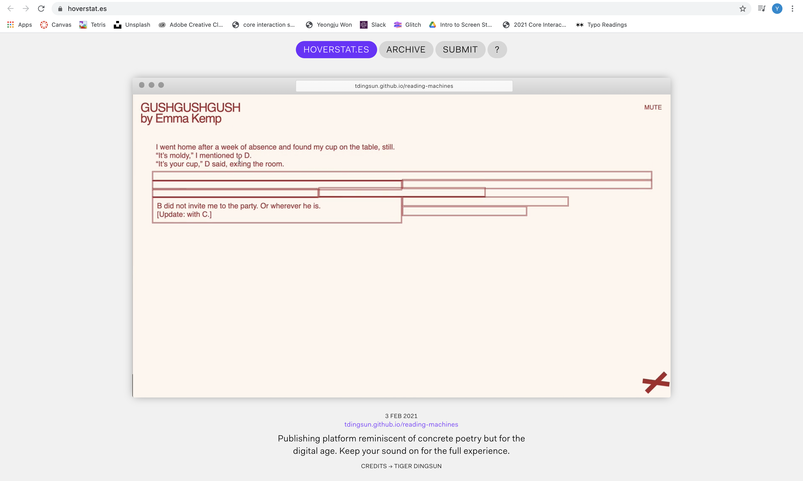
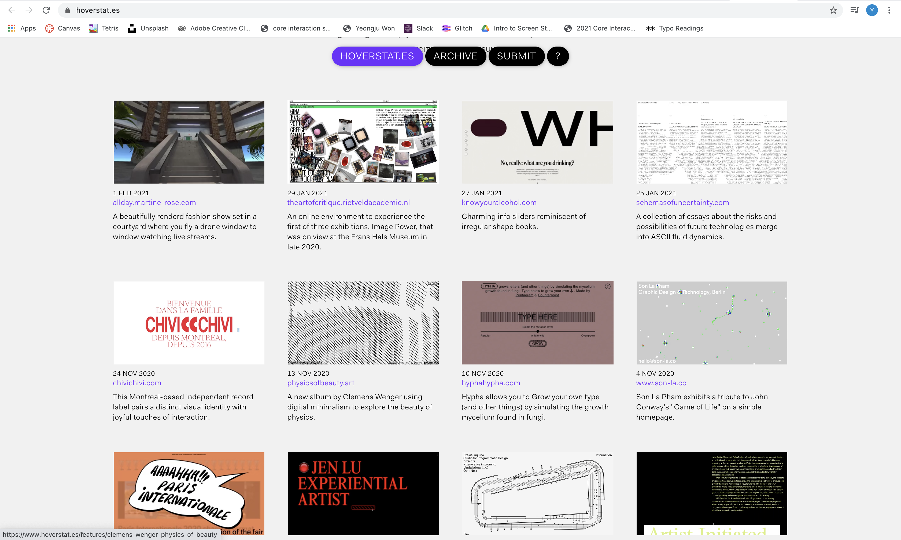
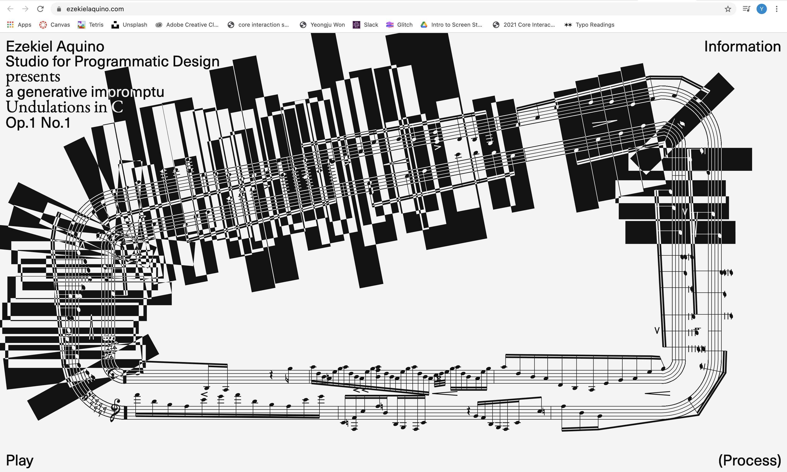
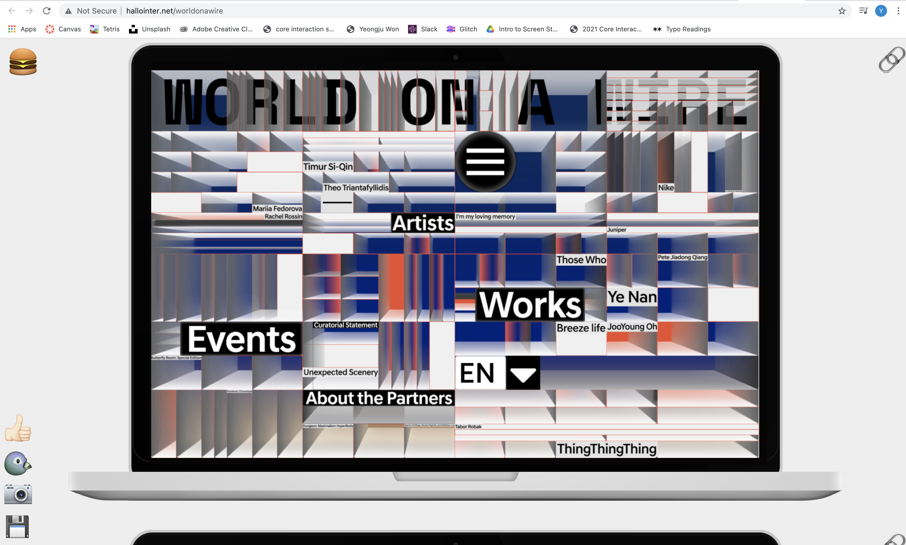
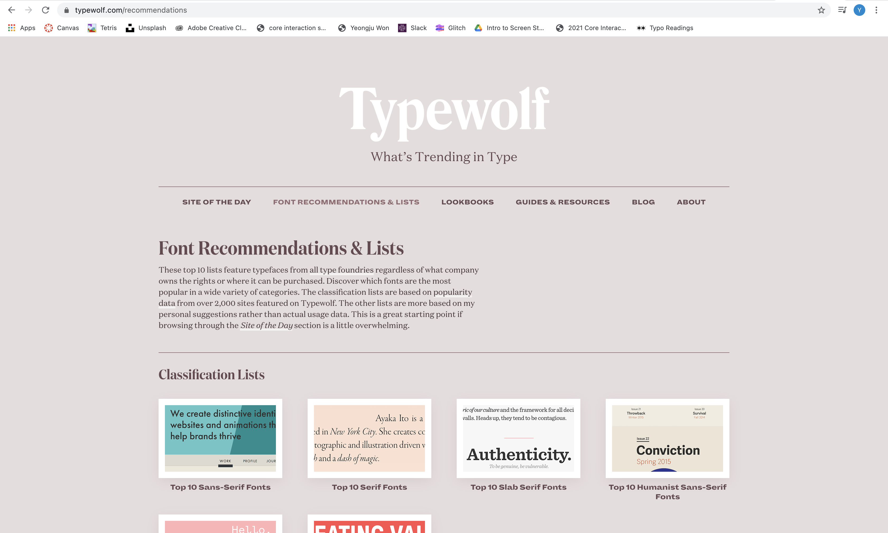
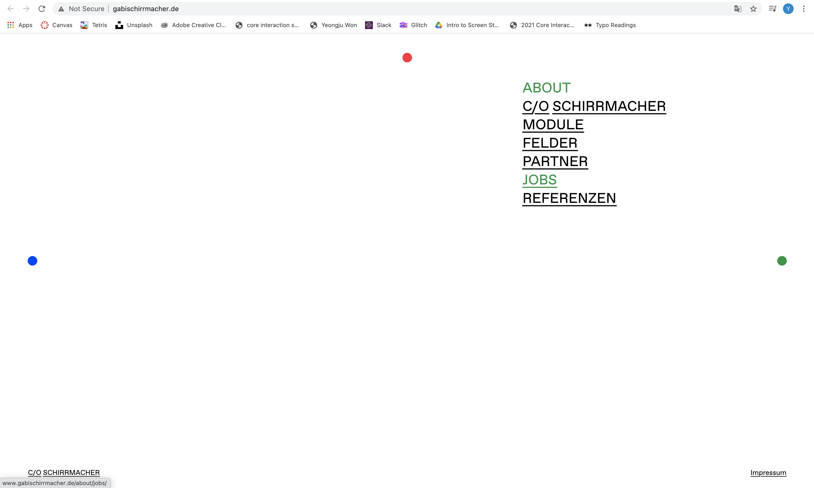
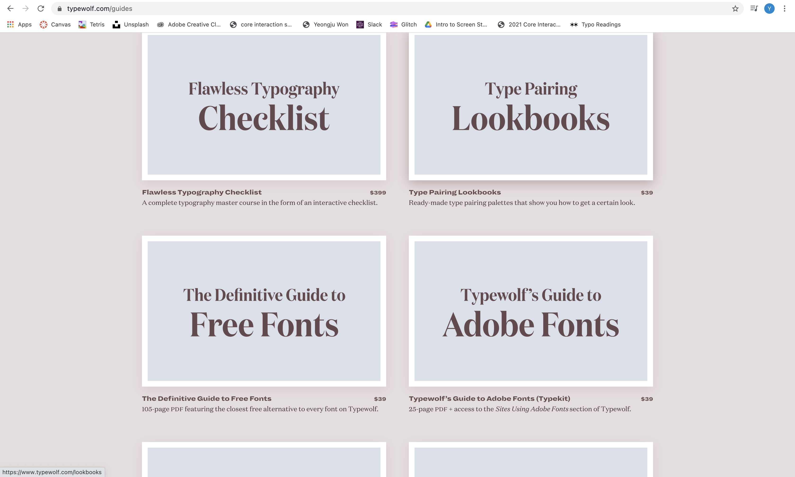
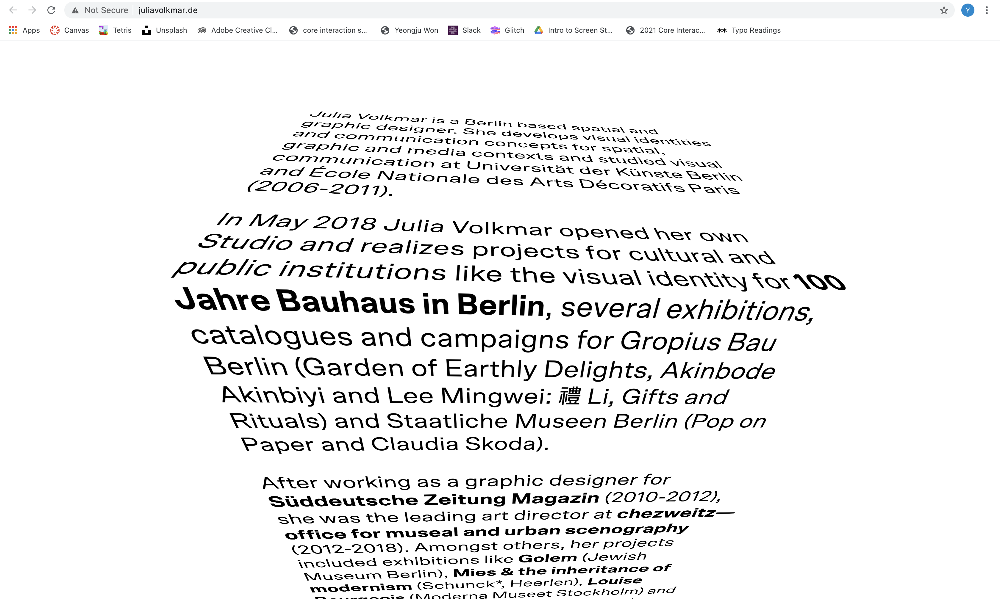

Type & Interaction Study
5 examples of
interesting/confusing/distinct
interactions on the web
- https://www.hoverstat.es/

I was confused on which links were meant to be hovered over
until I actually did and some change was made or something popped up
- https://www.hoverstat.es/

I found it interesting how some features highlighted
when I hovered over it so it was easier to read.
- https://newdawn.digital/

I found this virtual interaction is very interesting and
the overall website is very organized.
- https://ezekielaquino.com/

I think the texture and pattern created with the music is interesting
but I was confused on what the purpose of it was.
- http://hallointer.net/worldonawire

I did not like this one at all I found it very confusing
because there were so many things going on
as well as nothing would actually indicated
that it is being hovered over other than the fact that
my mouse goes from just a pointer to the clicker hand thing.
5 examples of
interesting/ugly/beautiful
typography on the web
- https://www.typewolf.com/

I found the font GT Alpina Typewriter, Lausanne very interesting
because it reminded me of what I think code and
a simple computer type would have looked like but in script form
so it has a contradicting mixture of both old and new.
- http://www.gabischirrmacher.de/

I think the simple design of the website
works nicely with the sans serif typeface.
- https://www.typewolf.com/

I like the the bubblyness of the Sometimes Times,
FF Bau, DM Mono font and how clean it looks.
- https://www.typewolf.com

I really disliked the Whyte, Media Sans font
because it looked like it was printed poorly or
something was wrong with the font
because glimpses of it were cut out.
- http://juliavolkmar.de/

I like how the type is arranged in the website,
almost like it is placed on top of the box.